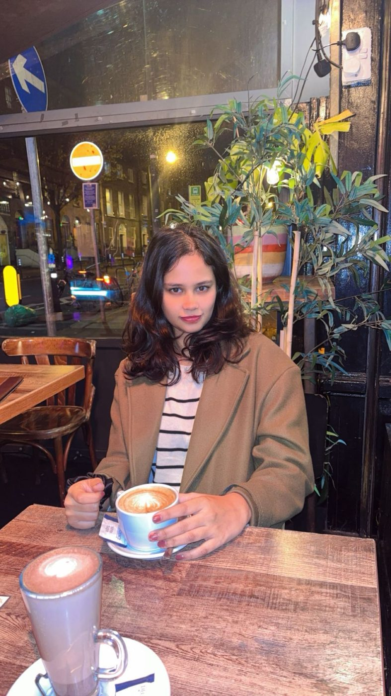
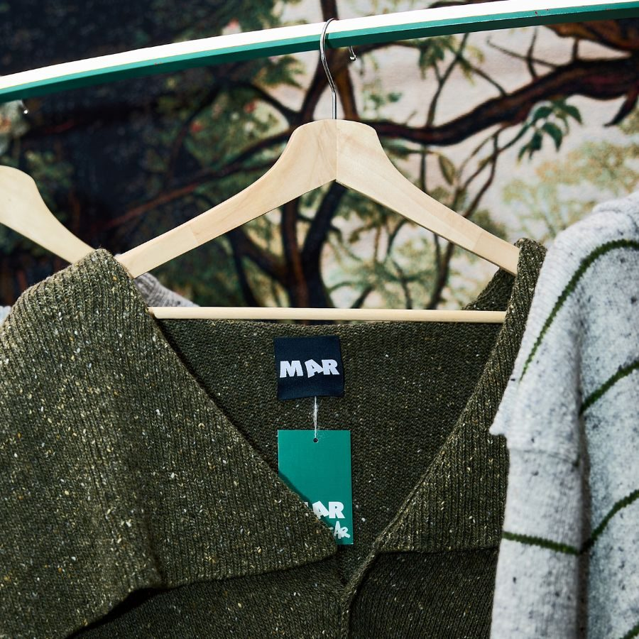
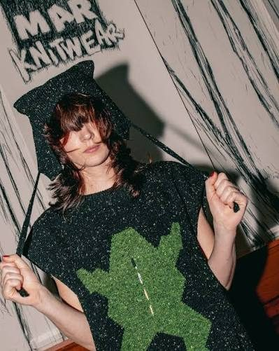
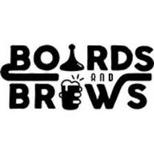
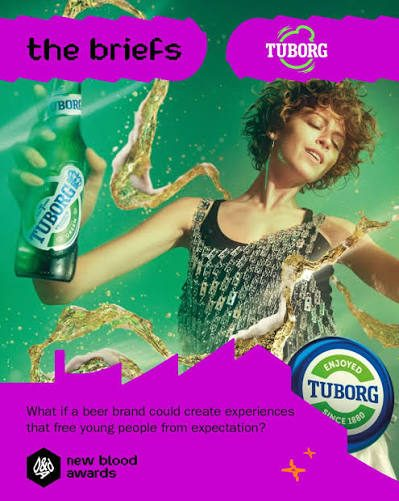

Turning brand ideas into campaigns that genuinely connect, where creativity meets what brings it to life.

A strategy-led, storytelling-driven marketer passionate about turning brand ideas into campaigns that genuinely connect.
I thrive at the intersection of creativity and structure, where big ideas meet the systems that bring them to life. From growth strategy and brand positioning to integrated campaigns and paid social, I've worked across startups, fashion, and tech — building marketing rooted in insight, culture, and audience behaviour.
I'm particularly interested in content strategy, market research, and campaign planning that feels both thoughtful and human.
MSc Marketing student at Trinity College Dublin with consulting-style experience developing growth-focused marketing strategies across brand positioning, SEO, organic growth, and digital campaigns for startups and early-stage businesses.
End-to-end campaign strategy and creative concept development, from insight to execution across channels.
Click to view my work →Positioning, brand voice, and content pillars that help audiences see themselves in the brands they love.
Click to view my work →Organic and paid social strategy built on community, storytelling, and consistent brand communication.
Click to view my work →I created this social media strategy while working with Mar Knitwear to help the brand grow organically without relying on paid advertising. The goal was to build a stronger online identity through storytelling, community-focused content, behind-the-scenes visuals, and consistent brand communication.
Designed a full social media campaign strategy and content calendar for an independent Irish fashion brand, aligned with their brand positioning and community engagement goals. Built audience-focused content pillars and campaign concepts grounded in customer persona analysis and brand storytelling.
Click to view my work
I positioned an independent Irish knitwear brand to convert admirers into buyers — not just fans of the craft, but people who see themselves in it. Developed brand strategy, content pillars, and a social campaign rooted in customer persona research and founder storytelling sessions.
Conducted brand audits and founder-led strategy sessions to deliver organic growth and digital visibility recommendations.
Click to view my work
Developed a digital-first advertising campaign strategy for Bonkers.ie, focused on customer acquisition and building brand trust among price-conscious consumers. Led audience segmentation, campaign positioning, and behaviour-driven messaging across paid social, search, OOH, and influencer channels.
Click to view my workDesigned a full email marketing strategy for Board & Brewed, a board game café in Dún Laoghaire, focused on building a community list and driving repeat bookings — community-list building via QR codes and event sign-ups, an 80/20 value-to-conversion content split, and automated sequences spanning welcome series, FOMO event reminders, and win-back offers.
Click to view my work
Repositioned Tuborg as a platform for grassroots culture, not just a beer brand. Developed a full integrated campaign spanning OOH, social, digital, and limited-edition artist collaborations — anchored by Tuborg Fondet. Hero idea: Soundspots, a tool mapping real local music scenes globally. Campaign line: "Noise complaint? More like influence."
Click to view my work
Built a growth-focused social media and LinkedIn strategy for an AI-based education startup, targeting student acquisition through organic and community-led channels. Designed a student ambassador programme to drive organic growth, combining community engagement with structured content systems and campaign planning. Led SEO planning and founder-led brand positioning to build long-term brand visibility.